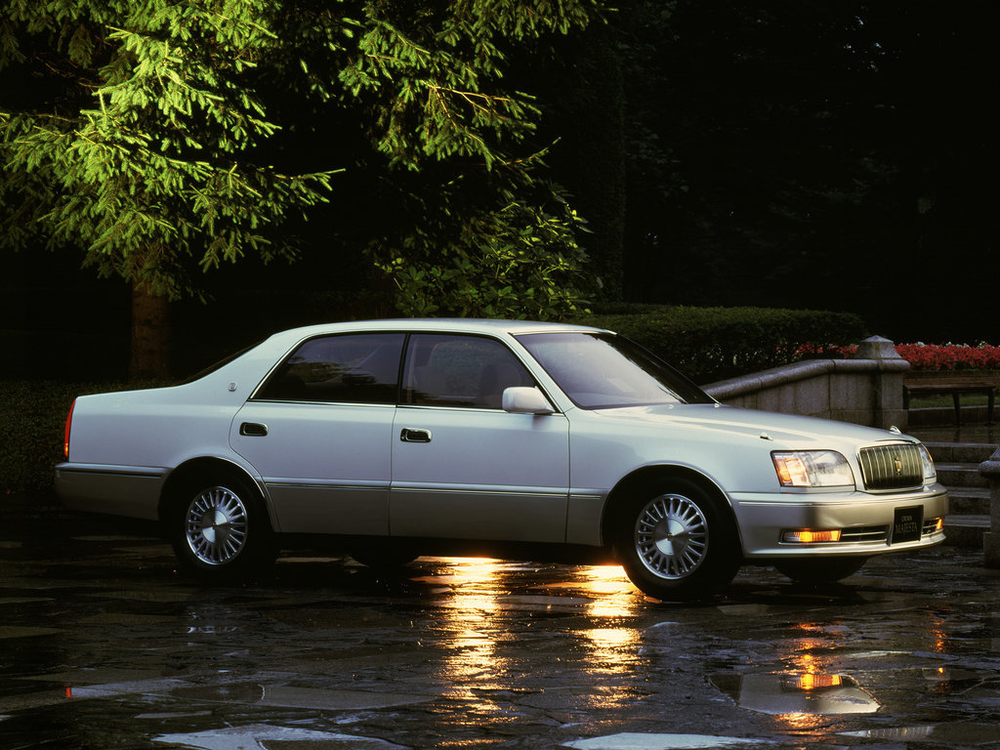
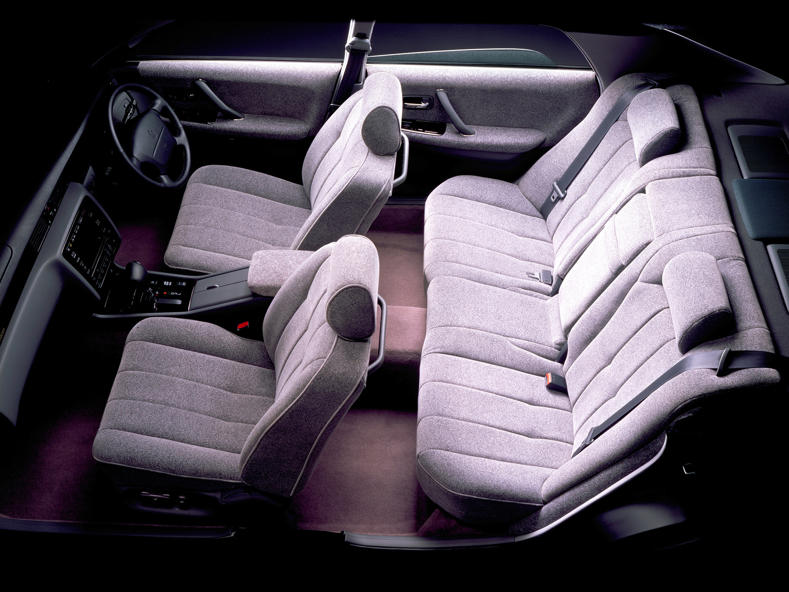
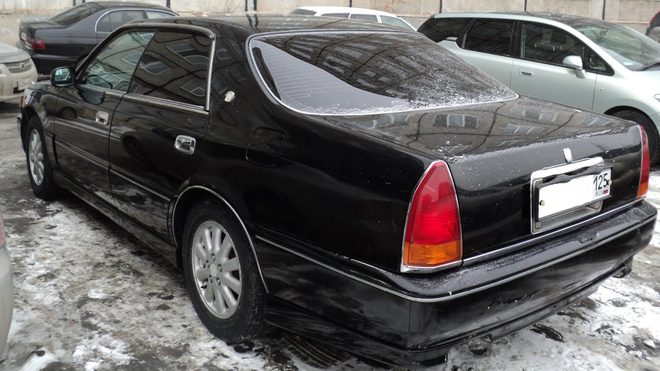

Toyota Crown Majesta

Toyota Crown Majesta в кузове S150 - второе поколение представительского седана компании Toyota. Производилась и собиралась в Японии.Дебютировав в 1991 году, модель стала более роскошным и крупным по габаритам вариантом Toyota Crown. В 1995 году произошёл рестайлинг, который сделал Crown Majesta более похожим на Toyota Celsior и Lexus LS400,которые появились в 1994 году. С момента выхода в 1991 году, остался 3-литровый рядный шестицилиндровый двигатель 2JZ-GE, а 1UZ-FE (V8) получил увеличение мощности до 265 л.с. Спустя два года на этом двигателе была применена технология VVT-i (система сдвига фаз газораспределения), которая прибавила 15 л.с., в результате двигатель имел мощность 280 л.с.

Несмотря на то, что машина находится несколько ниже чем Century, она не отстаёт по отделке салона и функционалу. Внутри : электроприводы сидений, электронная приборная панель, наличие сенсорного экрана, с которого происходит управление кондиционером, климатом, и т.д. . Длина - почти 5 метров, что говорит о внушительной просторности салона.
